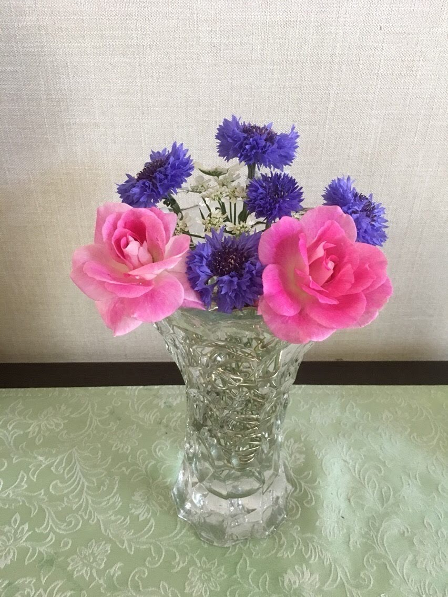

Welcome To My Page
ENJOY HOME with FLOWERS
この六つの花瓶は玄関に置いており、ここには比較的香りのよいギーサヴォア・クロードモネ・クレマチスを庭から切って飾っています。家族が出かける際に、このバラの香りで一日幸せな日を過ごしてほしいという願いをこめて置いています。
この花瓶に入れられているバラはポールセザンヌです。たった一本の木であるのにもかかわらず、驚くほどの花が咲いてくれたので、家の中にも飾りました。

この花瓶には、庭に咲いている矢車草と共にピンクアイスバーグを飾りました。玄関の一角に置いてあります。この花瓶は、今年の誕生日に娘に買ってもらった花瓶で、とても気に入っています。